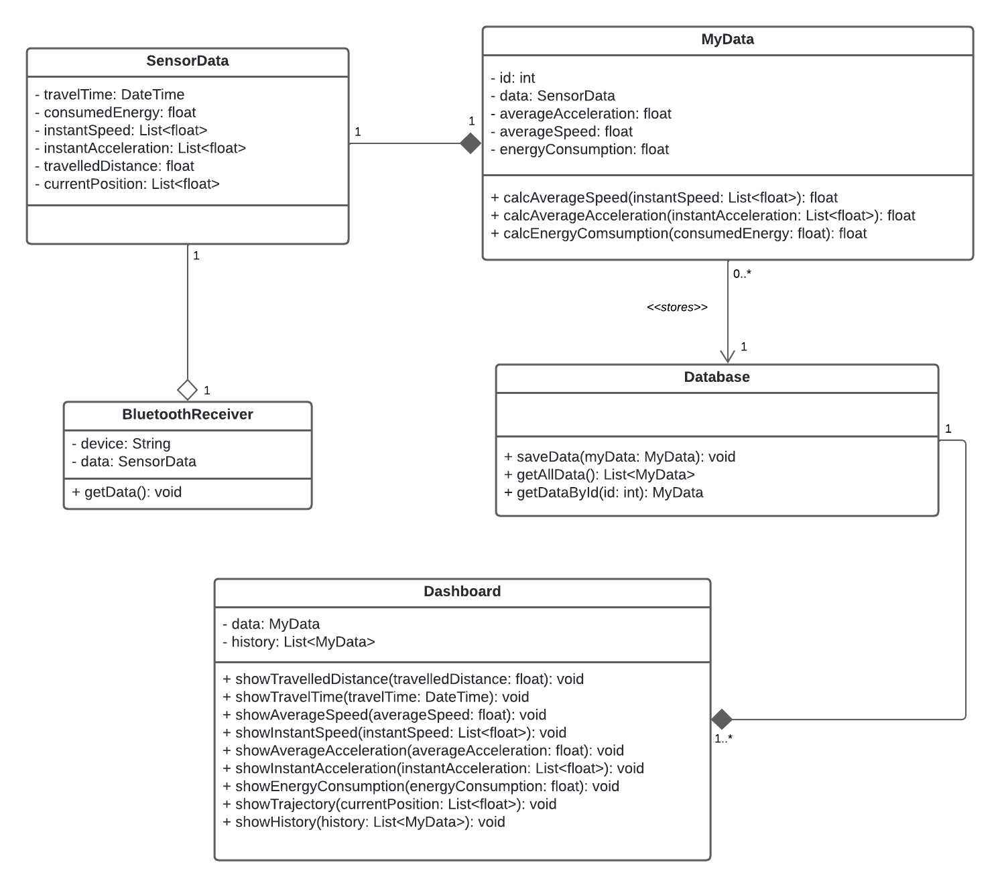

4. Projeto Conceitual
4.1 Características Gerais
O projeto visa o desenvolvimento de um carrinho seguidor de linha que percorra
três trilhas marcadas no chão, transportando um ovo de galinha ao longo desses trajetos
sem danificá-lo.
Com o objetivo de minimizar o tempo de percurso, é necessário criar
um carrinho totalmente autônomo, equipado com todos os componentes necessários embarcados.
O carrinho incluirá um design mecânico robusto, priorizando materiais leves e
duráveis para suportar os desafios da corrida sem comprometer a segurança do ovo.
Além disso, o carrinho será projetado com um conjunto de sensores, capaz de interpretar os dados
dos sensores de linha e ajustar sua direção e velocidade de maneira eficiente.
Com isso, será possível processar essas informações e mostrando os dados em tempo real em uma
aplicação web, de cada corrida.
Um sistema de propulsão adequado será essencial para otimizar o desempenho do carrinho,
enquanto uma fonte de energia confiável garantirá sua autonomia ao longo das trilhas.
Combinando as áreas da engenharia e testes rigorosos, o objetivo é criar um carrinho seguidor
de linha que não apenas complete as trilhas no menor tempo possível, mas
também transporte o ovo com segurança, demonstrando a eficácia da autonomia robótica
em ambientes desafiadores.
4.2 Estrutura
4.3 Descrição de hardware
4.4 Análise de consumo energético
4.5 Descrição de Software
4.5.5 Diagrama de Classes
A imagem 1 abaixo exibe o diagrama de classes proposto para o desenvolvimento da aplicação de análise de dados.

Imagem 1: Diagrama de classes.
Autor: Brunna Louise
Fonte: Autor(es)
4.5.6 Arquitetura do software
A arquitetura do software é o elemento que define a organização e a comunicação entre as entidades a serem desenvolvidas. Por meio do esquema abaixo, é possível visualizar os componentes e os relacionamentos entre eles em um sistema de software.

Imagem 2: Diagrama da arquitetura.
Autor: Gabriel Avelino
Fonte: Autor(es)
Os componentes podem ser divididos em:
-
Front-end: O ViteJs é um framework utilizado para criação de aplicações WEB de maneira ágil. Vai ser o responsável por mostrar os dados no dashboard para o usuário.
-
Back-end: Vai ser construído utilizando o web framework FastAPI para a manipulação dos dados e o banco de dados PostgresSQL para a persistência dos dados enviados pelo arduíno.
-
Comunicação bluetooth: Um script python vai ser utilizado para conectar com o módulo bluetooth do arduíno e enviar os dados dos sensores que foram lidos para o backend.
Componentes a serem aprofundados
-
Estruturas:
- O carrinho deve ser construído com materiais leves, mas robustos,
capazes de suportar os rigores da corrida sem comprometer a integridade do ovo.
- O carrinho deve ser construído com materiais leves, mas robustos,
capazes de suportar os rigores da corrida sem comprometer a integridade do ovo.
-
Coleta e Transmissão de Dados:
- É fundamental garantir a transmissão de
dados pelos sensores e exatidão na coleta de informações eficiente para o banco de dados.
- É fundamental garantir a transmissão de
dados pelos sensores e exatidão na coleta de informações eficiente para o banco de dados.
- Análise de Consumo Energético:
- A principal preocupação energética é o consumo da bateria que alimenta os componentes eletrônicos.
Esta análise busca compreender e otimizar o consumo da bateria, assegurando a operação contínua dos sensores e sistemas embarcados durante todo o percuso do carrinho.
- A principal preocupação energética é o consumo da bateria que alimenta os componentes eletrônicos.
- Construção de Software:
- Abordará as melhores estratégias para o desenvolvi- mento, armazenamento e exibição dos dados coletados.
EAP - Estrutura Analítica de Projeto
Estrutura Análitica do Projeto (EAP) é um diagrama que tem a finalidade de
organizar e decompor o escopo do projeto em pequenas partes, facilitando o entendimento
e a visualização do projeto como um todo.
A EAP é uma ferramenta muito utilizada no gerenciamento de projetos, pois ela permite que
tenha uma visão geral do projeto, podendo assim, identificar os principais entregáveis e
as atividades necessárias para a conclusão do projeto.
Assim, as etapas que foram definidas são:
- Documentação: Fase que envolve a pesquisa teórica e documentação do projeto,
definindo escopo, custo e tempo.
- Estruturas: Fase de desenvolvimento do projeto de estruturas do carrinho. Com
pesquisas teóricas, escolha de materiais e construção da estrutura do projeto.
- Energia: Fase de desenvolvimento do projeto energético, com pesquisas teoricas
sobre consumo energético e escolha dos componentes para o consumo de energia do
carrinho.
- Eletrônica: Fase de desenvolvimento do projeto de eletrônica, com pesquisa de sen-
sores e esquemáticos dos componentes e desenvolvimento dos códigos e calibrações
dos sensores.
- Software: Fase de desenvolvimento do projeto de software, com criação de diagra-
mas e fluxos de usuários, bem como também o desenvolvimento da aplicação que
receberá os dados do carrinho em tempo real.
- Integração: Etapa que corresponde a integração de todos as partes do projeto e testes de integração para a conclusão do produto.